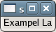

Sets the desired maximum width in characters to n_chars chars.
Example 89. Setting the Max Width of a GtkLabel in Characters
<?php
// Create a window to hold the label.
$window = new GtkWindow();
// Set up the window to close cleanly.
$window->connect_simple('destroy', array('Gtk', 'main_quit'));
// Create a label.
$label = new GtkLabel('Exampel Label');
// Set the max width in characters.
$label->set_max_width_chars(10);
// Add the label to the window.
$window->add($label);
// Show the window and start the main loop.
$window->show_all();
Gtk::main();
?> |

See also: get_max_width_chars()